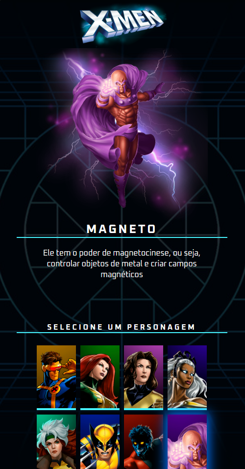
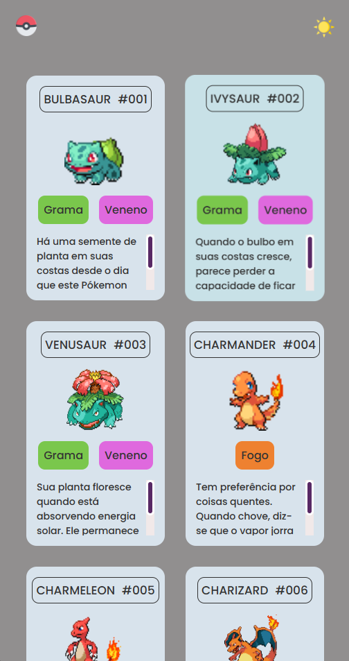
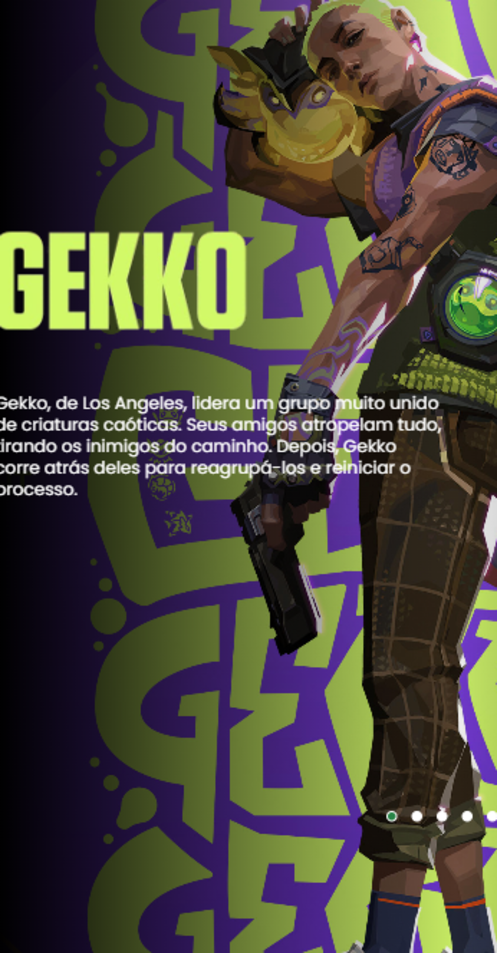
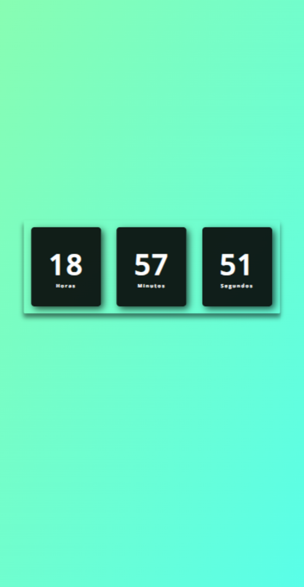

X-Men — Seleção de personagens
Página interativa onde o usuário escolhe um personagem e vê sua imagem, nome e descrição atualizados dinamicamente via manipulação do DOM.
Construo interfaces web responsivas, acessíveis e com atenção aos detalhes, transformando layouts em código limpo e organizado com HTML, CSS e JavaScript.
Sou desenvolvedor front-end com foco em criar experiências web bem estruturadas, que funcionem bem em qualquer tamanho de tela. Gosto de transformar ideias em interfaces claras e de entender o porquê de cada decisão no código.
Aprendo construindo: cada projeto é uma oportunidade de praticar boas práticas de HTML semântico, CSS organizado e JavaScript para interatividade. Busco feedback constantemente na comunidade e compartilho o que aprendo.
Procuro uma oportunidade em um time de tecnologia onde eu possa contribuir, evoluir tecnicamente e entregar valor real para o produto.
Layouts mobile-first que se adaptam a qualquer dispositivo.
HTML semântico, CSS organizado e JavaScript legível.
Interfaces pensadas para que todas as pessoas consigam usar.
Sempre estudando e me desafiando com novos projetos.
As ferramentas que uso no dia a dia para construir e publicar projetos.
Uma seleção de trabalhos com código aberto e versão publicada para testar.

Página interativa onde o usuário escolhe um personagem e vê sua imagem, nome e descrição atualizados dinamicamente via manipulação do DOM.

Listagem de Pokémon em cards com número, tipos e descrição, layout em grid responsivo e alternância de tema claro/escuro.

Landing page temática do agente Gekko com carrossel de imagens, tipografia de impacto e identidade visual fiel ao jogo.

Relógio em tempo real que atualiza horas, minutos e segundos a cada segundo usando a API de datas do JavaScript.